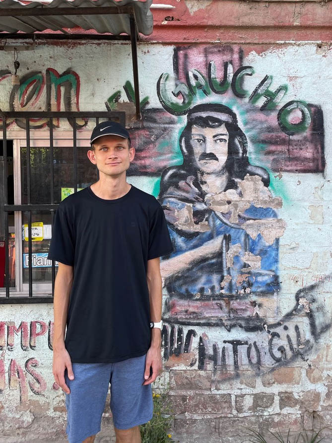
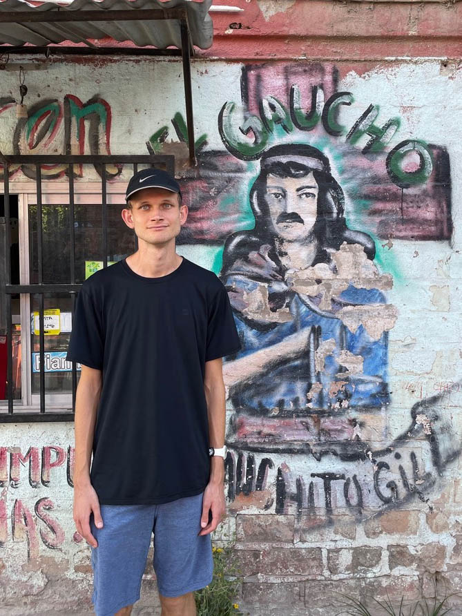

Vitalik Buterin traveled to Argentina in December 2021 and decided to visit the most famous slum in the country.
We have inmortalized this ocassion with the use of Blockchain technology by creating a +200 NFT collection.
Located in the nerve center of the city, between the main bus station, the port and Center Business disctrict.
It is one of the cities with the best quality of life in Latin America (The Economist).
The City also stands out in infrastructure, culture, environment, gastronomy and entrepreneurial talent.
However, about 250,000 residents live in informal settlements.
According to the last population census of Buenos Aires city in 2010, 70.317 porteños households live under some condition of house vulnerability. There are more than 650.000 people in this situation, almost a quarter of Buenos Aires citizens live in a housing emergency situation.
Villa 31 and 31 bis of Retiro Buenos Aires: According to the last population census of 2017, approximately 40,200 inhabitants, making a total of 12,500 homes, with an average of 3 people per household. Distributed in 10 sectors, the neighborhood cover 72 hectares.
The 30s world crisis produced a context of unemployment that generated the emergence of the first villas in the port of Buenos Aires, which would then settle as the Villa 31. Villa 31 first settlers were port workers Polish authorized by the State but then where forced to move.
In its beginnings, Villa 31 met as "Villa Desocupación". The arrival of Italian immigrants in the 40s contributed to the settlement in its beginnings.
Governments policies were the uprooting and expulsion of their population. Falling urbanization attempts and deficient integration policies contribute to the low integration of the neighborhood with the city. There were several opportunities in which projects were initiated and kept unfinished, or were not part of the agenda of the Executive Bureau.
Through the years the Villa grow up and got more populated, due to different crises in Argentina. It was only in 2009 when the historic Law 3343 was sanctioned, which guarantees the urbanization, the integration, and the rooting of its inhabitants in an adequate habitat within the polygon of Villa 31. In 2015, when Horacio Rodriguez Larreta assumed as head of Government of the City of Buenos he posed his policy with the town's villas, through the intervention of the City Housing Institute (IVC), and for Villa 31 - 31 bis The Secretariat of Social and Urban Integration (today Special Projects Unit).
The latter had as jurisdiction the Villa 31 and 31 bis, seeking to intervene through drinking water infrastructure works, drains and formal electricity connections, construction of more than 1000 new homes, remodeling of health centers, school buildings, improvements in existing homes, through financing with international loan taking through the national state, fundamentally with the Inter-American Development Bank (IDB) and the Latin American Development Bank (CAF).
Within the commonly well-known problems underlying this type of settlement, overcrowding, access to basic services, among others, there is also the lack of access to the formal Internet connection and the possibility of accessing an educational system that forms young With the new tools that are massively used all over the world. That is why, considering that it has begun the year 2022, and with the boom of Blockchain technology and the adoption of the developing countries, it is essential to make political decisions that include people who are located in This type of settlement as a population to educate since they are guaranteed the conditions of possibility. That everyone can access these types of tools, and explore the opportunity they provide.
It is time to capitalize on what Vitalik highlighted in his visit to our country, said by him in the Usina del Arte: "I am very impressed, I did not expect even this. The size of the community and the level of projects here is amazing, It is much more than I expected and what I've seen in the world so far, and there is a lot of crypt talent despite not being the center of the economy. "
The first visit of Vitalik Buterin to Argentina will be marked forever in the history of our country. The fact that such a brilliant mind has decided to visit Argentina, shows greatness and a dignified humility of copying on the part of those who have this type of talents.
“I don’t want Ethereum to be a technology that is not in touch with reality”
- Vitalik Buterin - Buenos Aires, Dec 2021.

 


The collection seeks to portray the gesture of Vitalik, since it was he who decided to visit our country to know the concrete structural problems (inflation, housing, infrastructure), and once here was he who took the initiative to know the neighborhood Mugica One of the most important personalities of the present and with greater predominance in the financial world is concerned and deals with "spilling the virtues of the model", generating concrete social impacts with the development of it, in the most committed and forgotten sectors. The Gesture of Vitalik denotes a change of paradigm in terms of the development and future of the system: that it is decentralized and that it is developed in promoting equity scenarios for the population as a whole.
With his participation in Ethereum, Vitalik tells us that his aspirations transcend the "old model" and are positioned on the real problems of the most disadvantaged contexts. The Gesture of Vitalik in Argentina, and in particular in the neighborhood is the mirror of that search that is strengthened in the world increasingly.
As part of the search to start solving a global problem that will take years it is important to highlight that, the development of Blockchain and Cripto (for being technologies that do not recognize borders, which resists censorship, which are decentralized and that anyone can participate in Ecosystems), is discovering a path that can present options to favor the most displaced sectors. One of those projects, already assembled on the Ethereum Network since March of the year 2021 is Proof of Humanity (POH) created by democracy earth and kleros.io. It is the first protocol mounted on the Blockchain of Ethereum, which uses video tests that are verified in a decentralized manner, and that once identity is verified, users begin to accumulate a universal income token (Universal Basic Income - UBI). The same, currently contains a record of fifteen thousand humans, and the value distribution of the Token Ronda on average $ 80 per month. It is important to highlight that, in many countries, that average amount is the equivalent of the minimum wage or a retirement.
The UBI is a token of universal basic income, the development of it belongs to the community, or the DAO that governs the Protocol of Proof of Humanity, where the improvements are voted democratically through the profiles of each user / beneficiary. The Token accumulates in real time in the Ethereum wallet at the rate of 1 UBI per hour, and it is supported by Vitalik Buterin, who is registered in Proof of Humanity and who is currently the largest UBI Holder of the world.
As part of our support for these projects, 30% of the sale value of every sale will be sent automatically to UBI Burner, which is a smart contract created to receive ETH, transform that ETH into UBI using uniswap and burn those UBIs by stagnating them in this contract. And since UBI is a Fairdrop (Fair Airdrop) Protocol whose main attribute is that it is uniformly distributed burning them has a humanitarian aspect of great value and a direct impact on its price appreciation.
Vitalik himself has used this tool in the past when he burned 50 ETH worth of UBI back in october 2021, with the goal to reduce circulating supply, which preserves the value of the token.
The UBI is designed as a human, universal right, where a record is built where it is not stigmatizing, which guarantees the possibility of access to all, since the distribution of the tokens does not distinguish from social or economic status. Then, Vitalik receives 1 UBI per hour, as well as any other human being registered in the registry. In 2022, community work has to be reinforced so that this type of projects reach as many people as possible, this in the endless search for persistent and significant changes to improve the material and economic capabilities of the population. The Padre Mugica neighborhood has proven to be the architect of its prosperity and growth with all its limitations over the years. With greater and better resources, the neighborhood, and the rest of the settlements, are destined to forge their most auspicious destinations.
Meet the team behind this project